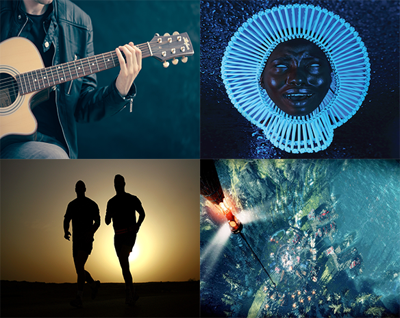

So besides working on and expanding my digital portfolio this is how I spend time to myself. Though as I am writing this, this is from the perspective of the pandemic years in America. So as far as social events and outings go I am limited to my own devices.
I really like to play on my guitar and in someways my coding and developing ethics have sort of reinforced my skills in learning the instrument by trying to pick up what can be done and reinforce one skill from another.
Every year, I try to listen a new genre, artist, or album. As of this year I have been listening to Childish Gambino's aka Donald Glover's Awaken My Love, for its amazing soul, funk, and R&B fusion but managing to compose in a way that's his sound.
When the pandemic hit the United States, I was hesitant to excercise outside since the pandemic is still raging on so I try to stay away from other people in my neighborhood street. I have been trying to get back into shape and try to get back into my old cardio health I once had.
I like to play videogames and for some reason, the new genre I have been trying to get into is Resource Management/City Builidng simulators. FrostPunk is a great example as it puts yourself in a test of leadership, social awareness, and difficualt decesion making you have to make as a person leading a group of survivors in a frozen apocalypse.
